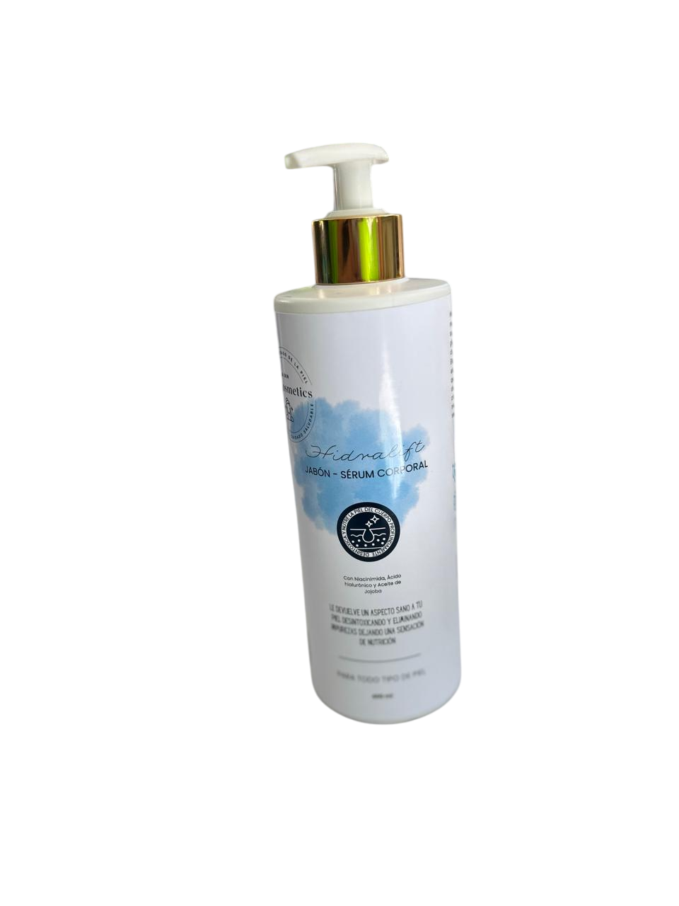

Soluciones de cuidado personal innovadoras, combinando limpieza profunda e hidratación duradera.
Un producto revolucionario que combina limpieza profunda e hidratación efectiva para una piel saludable y radiante.
Ofrecer soluciones de cuidado personal innovadoras y de alta calidad que combinen limpieza profunda e hidratación duradera, promoviendo una piel saludable, protegida y radiante. Nos comprometemos con la sostenibilidad y la utilización de ingredientes naturales para garantizar el bienestar de nuestros clientes y del medio ambiente.
Ser reconocidos como líderes en el mercado del cuidado de la piel, destacándonos por ofrecer productos que transformen rutinas diarias en experiencias de bienestar, estableciendo nuevos estándares en innovación, sostenibilidad y satisfacción del cliente.
Muchas personas enfrentan el desafío constante de encontrar productos que logren equilibrar dos aspectos esenciales del cuidado de la piel: la limpieza profunda y la hidratación efectiva.
Este problema es particularmente notable en quienes tienen piel seca o sensible, ya que necesitan productos que no solo eliminen impurezas, sino que además sean lo suficientemente suaves para no causar irritación o resequedad.
En el caso de los jabones tradicionales, aunque son efectivos para remover suciedad, grasa y residuos acumulados en la piel, tienden a eliminar también los aceites naturales que la mantienen hidratada. Esto puede dejar la piel con una sensación de tirantez, sequedad o incluso provocar descamación con el uso constante.
Por otro lado, los productos específicamente diseñados para hidratar, como cremas, lociones o serums, suelen ser pesados o engorrosos para incorporarlos en la rutina de baño. Estos productos, además, requieren tiempo adicional para ser aplicados correctamente y permitir que la piel los absorba por completo, algo que muchas personas no tienen en su día a día.
Como resultado, surge la necesidad de un producto innovador que combine de manera efectiva la capacidad limpiadora de un jabón con el poder hidratante de una crema, sin comprometer la comodidad y simplicidad de uso durante el baño. Esta combinación no solo facilitaría el cuidado diario de la piel, sino que también ofrecería una solución práctica para quienes buscan mantener una piel saludable y equilibrada sin invertir tiempo o recursos adicionales.
Existe una necesidad real y cotidiana que muchas personas enfrentan en su día a día, tal vez incluso tú o alguien cercano, experimentan al cuidar su piel.
Por ejemplo, quienes tienen piel seca o sensible suelen enfrentarse a una lucha constante: por un lado, necesitan productos que eliminen eficazmente la suciedad, el maquillaje o la grasa acumulada, pero, por otro, temen que esos mismos productos terminen dejando su piel más reseca o irritada. No es raro escuchar a alguien decir que después de usar ciertos jabones su piel se siente tan tirante que parece que se va a agrietar, o que han tenido que buscar alternativas que no siempre cumplen con sus expectativas.
Por otro lado, las opciones que prometen hidratación profunda, como cremas o serums, aunque maravillosas, no siempre son prácticas. Muchas veces requieren más tiempo del que uno tiene, especialmente en las mañanas apresuradas o antes de dormir, cuando lo único que quieres es terminar rápido tu rutina y descansar. Además, algunos de estos productos pueden sentirse pesados o incómodos, especialmente en climas cálidos o para quienes prefieren productos ligeros y fáciles de usar.
Pensándolo bien, ¿Cuántas veces has querido encontrar algo que simplifique todo este proceso? Un producto que, en lugar de obligarte a elegir entre limpieza o hidratación, te ofrezca ambas cosas al mismo tiempo.
Algo que puedas usar mientras te duchas, sin necesidad de dedicar tiempo extra después, y que deje tu piel no solo limpia, sino también suave y cómoda. Este tipo de solución no solo responde a una necesidad funcional, sino que también tiene un impacto directo en cómo nos sentimos. Porque cuando nuestra piel se ve bien y está sana, nos sentimos más seguros, más cómodos y más listos para enfrentar el día.
En este sentido, no se trata solo de un capricho, sino de una respuesta a las necesidades de personas reales, que buscan productos más eficientes y adaptados a sus vidas. Un producto así podría marcar la diferencia, ayudando a quienes lo usan a cuidar su piel sin complicaciones y a sentirse bien en su propia piel.
Nuestra estrategia de mercadotecnia combina lo mejor de lo tradicional y lo digital para llegar a más personas y destacar nuestro producto.
1. Trípticos: Usaremos trípticos atractivos con información clara sobre los beneficios del producto, que distribuiremos en lugares estratégicos como centros comerciales y clínicas dermatológicas.
2. Página Web: Crearemos una página web fácil de usar, donde los clientes puedan encontrar más detalles del producto, leer testimonios y comprar en línea. Será visualmente atractiva y funcionará perfectamente en dispositivos móviles.
3. Comercial Publicitario: Lanzaremos un comercial publicitario que muestre de manera sencilla y emotiva cómo nuestro producto puede facilitar la rutina diaria de cuidado de la piel. Este anuncio se difundirá en redes sociales.
4. Actividades Presenciales: Organizaremos actividades en lugares concurridos para entregar muestras gratuitas, porque nada convence más que probar el producto y sentir sus beneficios de inmediato.
Con estas acciones buscamos conectar con los consumidores y mostrarles que tenemos una solución práctica y efectiva para su cuidado personal.
Este producto está pensado principalmente para mujeres de 18 a 50 años de la colonia Revolución Mexicana en Pánuco, Veracruz, aunque su versatilidad y beneficios lo hacen atractivo para cualquier persona que desee mantener su piel hidratada, protegida y revitalizada.
Su diseño práctico y adaptable para todo tipo de piel lo posiciona como una solución accesible y efectiva, capaz de satisfacer necesidades diversas.
El enfoque inicial será establecer una presencia sólida en el mercado local, distribuyendo el producto en tiendas del municipio para facilitar el acceso directo a los consumidores de la zona. Esto permitirá crear una conexión cercana con los clientes y generar confianza en la calidad del producto.
Además, para ampliar su alcance, se implementará un canal de ventas en línea a través de nuestra página oficial, ofreciendo comodidad y facilidad a los consumidores de otras regiones. De esta manera, el producto no solo se limita al mercado local, sino que busca posicionarse como una opción de talla nacional, accesible desde cualquier lugar del país.
Este enfoque mixto combina la proximidad del mercado local con las ventajas de la distribución digital, permitiendo atender tanto a clientes cercanos como a un público más amplio que valore los beneficios de este innovador producto.
Estos competidores son relevantes porque se enfocan en la hidratación y el cuidado de la piel:
Dove Original o Dove Nourishing Care & Oil: Dove es ampliamente conocido por sus jabones en barra y líquidos enriquecidos con crema humectante, diseñados para hidratar y cuidar la piel, posicionándose como una opción para piel seca y sensible.
Ver productoPalmolive Naturals Coco & Leche: Esta línea está formulada con extractos naturales, como leche de coco, y enfoca su mensaje en la hidratación y el cuidado de la piel, lo que podría atraer a un público similar.
Ver productoNivea Creme Soft o Nivea Oil in Lotion (con aceite de coco): Aunque Nivea es más conocido por sus lociones y cremas, también ofrece jabones líquidos y en barra que incluyen aceites nutritivos y se enfocan en la hidratación intensa.
Ver productoHidralift se destaca por su combinación única de serums nutritivos y aceite de coco, ofreciendo una limpieza profunda, hidratación intensa y revitalización en un solo producto. Está formulado para todo tipo de piel, lo que lo hace accesible a un público más amplio.
A diferencia de otros productos, es fácil de usar durante la rutina diaria de baño, brindando resultados rápidos sin complicaciones. Además, ofrece hidratación duradera y protección, evitando la resequedad.
Con su enfoque en ingredientes naturales, Hydralift se posiciona como una opción premium para quienes buscan un cuidado de la piel efectivo y accesible.
Hidralift se distribuirá a través de varios canales estratégicos para llegar a diferentes segmentos de consumidores. En primer lugar, se encontrará disponible en supermercados y tiendas de cuidado personal, lo que facilitará su acceso a un amplio público.
Además, se lanzará una página web optimizada, especialmente dirigida a captar al público joven y a los compradores digitales, permitiendo una compra cómoda y directa desde cualquier lugar.
También se contemplará su venta en tiendas de lujo accesible, aprovechando su posicionamiento como un producto premium pero asequible, lo que lo hace atractivo para quienes buscan productos de alta calidad sin un precio elevado.